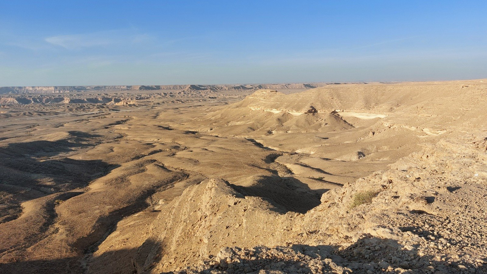
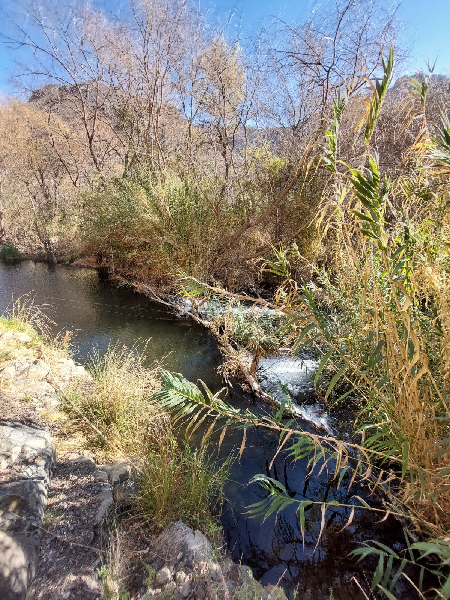
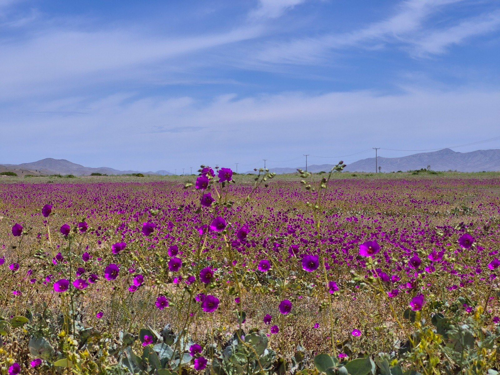
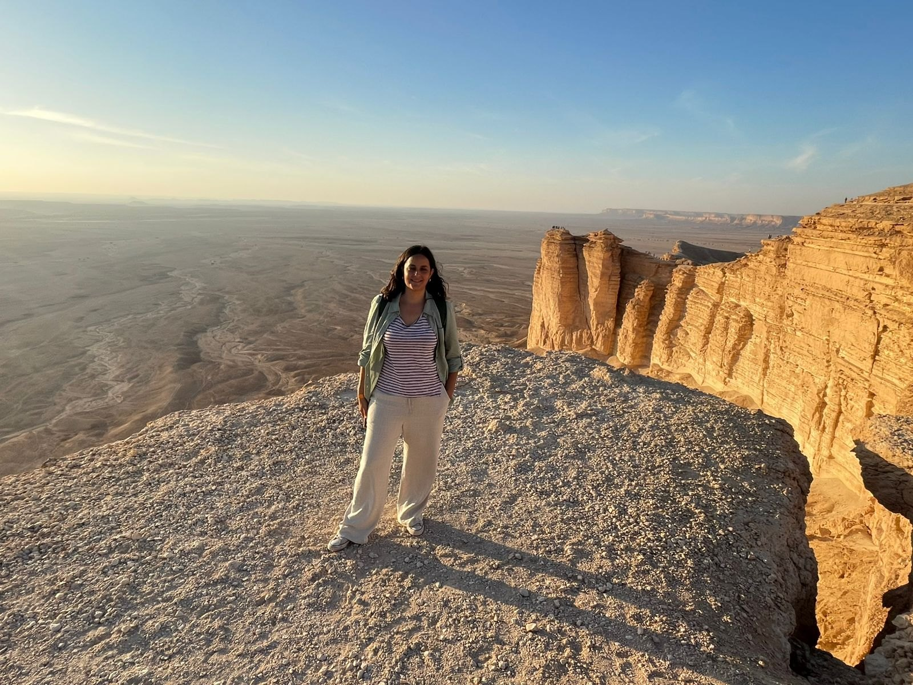

LÍNEA DE INVESTIGACIÓN 01
Conocimientos y valores plurales
Analizar qué perspectivas están representadas —y cuáles quedan excluidas— de la ciencia y las políticas ambientales.
Sistemas de conocimiento · Valores ambientales · JusticiaCIENCIA SOCIOECOLÓGICA / CHILE Y MÁS ALLÁ
Investigo cómo distintas formas de conocer, valorar y experimentar el entorno pueden contribuir a decisiones ambientales más inclusivas y colaborativas.

Personas · ecosistemas · decisiones
01 / UNA PREGUNTA ARTICULADORA
Las decisiones ambientales no dependen únicamente de la ciencia. Las personas aportan conocimientos, valores, experiencias y expectativas diferentes. Mi investigación explora cómo reconocer e integrar esas diferencias en la toma de decisiones, sin suponer que desaparecerán los desacuerdos.
Conocimientos científicos, locales y profesionales; valores, percepciones, experiencias y prioridades.
Evaluación participativa, métodos mixtos, modelación, diálogo y análisis multicriterio.
Cocreación, aprendizaje social, colaboración intersectorial e interfaces ciencia-política.
Decisiones mejor fundamentadas, legítimas y adaptativas frente a la complejidad, incertidumbre y conflicto.
Gobernanza del agua·Adaptación climática·Restauración ecológica·Gestión territorial
02 / INVESTIGACIÓN
LÍNEAS DE INVESTIGACIÓN CONECTADASAnalizar qué perspectivas están representadas —y cuáles quedan excluidas— de la ciencia y las políticas ambientales.
Sistemas de conocimiento · Valores ambientales · JusticiaDiseñar y evaluar maneras de reunir distintas evidencias y experiencias en evaluaciones y modelos.
Elicitación · Modelación participativa · Análisis multicriterioInvestigar cómo personas e instituciones negocian intereses, relaciones de poder e incertidumbre.
Gobernanza del agua · Cocreación · Ciencia-políticaEstudiar la capacidad adaptativa y el cambio ambiental en territorios con escasez hídrica y sistemas humanos y naturales acoplados.
Tierras áridas · Adaptación climática · RestauraciónMÁS ALLÁ DE UNA DISCIPLINA
«Un modelo ambiental útil no solo debe representar bien un sistema. También debemos preguntarnosqué deja fuera.»
Síntesis editorial inspirada en investigaciones sobre valores plurales y modelación hidrológica; no es una cita textual.
Explorar el estudio ↗03 / CASOS DE ESTUDIO
INVESTIGACIÓN EN CONTEXTOS REALES
¿Qué tan bien representan los modelos hidrológicos los valores que las personas atribuyen al agua? Esta investigación en la cuenca del Huasco conecta perspectivas locales con la modelación y muestra lo que las herramientas existentes pueden omitir.
Leer artículo de 2026 ↗
Explorar cómo interactúan los modelos, la escasez de agua, las narrativas divergentes y las decisiones históricas en procesos colaborativos bajo presión ambiental.
Conocer antecedentes ↗
Integrar narrativas de actores y enfoques multicriterio en la evaluación de restauración y gestión territorial en paisajes áridos y mediterráneos.
Explorar trayectoria ↗Fotografías proporcionadas para este sitio. Los paisajes ilustran los temas de investigación y no implican una correspondencia geográfica con los estudios descritos.
04 / PROYECTOS DE INVESTIGACIÓN
FINANCIAMIENTO COMPETITIVO · ANID CHILECuatro proyectos financiados por ANID que exploran gobernanza del agua, servicios ecosistémicos, seguridad hídrica y capacidad adaptativa mediante perspectivas plurales e investigación colaborativa.
Investigación sobre consejos de cuenca y gobernanza policéntrica, con énfasis en participación, democracia y resiliencia de los sistemas socioecológicos.
Evaluación de servicios ecosistémicos en un sistema socioecológico desértico, integrando diversos conocimientos y valores para orientar futuras políticas públicas.
Exploración de trayectorias robustas de seguridad hídrica en una cuenca costera semiárida mediante enfoques transdisciplinarios.
Investigación sobre patrones históricos de decisión en organizaciones de usuarios de agua y su relación con la capacidad adaptativa ante crisis socionaturales.
Los montos corresponden al presupuesto total informado de cada proyecto; no representan financiamiento personal. Los periodos indican fechas oficiales de ejecución, no necesariamente actividad vigente.
05 / PUBLICACIONES
SELECCIÓN DE ARTÍCULOS CIENTÍFICOSArtículos seleccionados que muestran los vínculos entre conocimientos, valores, modelación, gobernanza y adaptación.
Selección editorial, no bibliografía completa. Verificar autorías y metadatos con los registros editoriales antes de publicar.
Ver publicaciones en Google Scholar ↗06 / CIENCIA Y DIÁLOGO
Los congresos, los diálogos de políticas y la investigación colaborativa conectan las preguntas académicas con las decisiones públicas.
07 / SOBRE MÍ
Soy investigadora ambiental y trabajo en la intersección de los sistemas socioecológicos, la ciencia de decisiones ambientales y la gobernanza colaborativa.
Mi trabajo comprende la evaluación participativa de la restauración, la gobernanza del agua, la adaptación climática y la integración de conocimientos en decisiones controvertidas. Más que considerar la participación como un fin, me interesa comprender qué revelan los procesos colaborativos, cómo se diseñan y si efectivamente informan las decisiones.
Soy profesora asistente de la Facultad de Ciencias Forestales y de la Conservación de la Naturaleza de la Universidad de Chile. Obtuve un doctorado en Ciencias de Recursos de Tierras Áridas en la Universidad de Arizona y un máster en desarrollo rural integrado y gestión ambiental en el Instituto Agronómico Mediterráneo de Zaragoza.
CONVERSEMOS
¿Te interesa colaborar en decisiones ambientales, integración de conocimientos, gobernanza o adaptación socioecológica?
anahi.ocampo@uchile.cl ↗